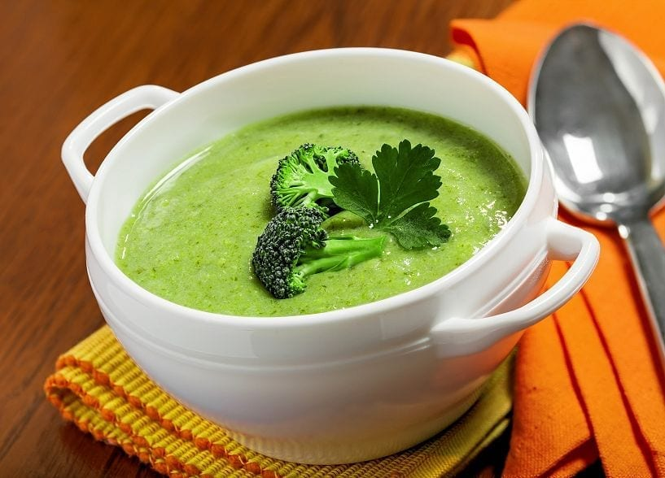

Brokkoli krémlemes
A brokkolikrémleves talán az egyik legklasszabb leves, ráadásul nagyon hamar el lehet készíteni, és kedvedre variálhatod a levesbetéteket hozzá!
| Elkészítési idő | Főzés | Összesen |
|---|---|---|
| 10 perc | 20 perc | 30 perc |

Hozzávalók
- 500 g brokkoli
- 1 csokor petrezselyem
- 1 ek vaj
- 1 közepes db vöröshagyma
- 2 gerezd fokhagyma
- só&bors&szerecsendió ízlés szerint
- 7 dl víz (kb.)
- 1 dl főzőtejszín
- 125 g tejföl
Elkészítés
- A brokkolit darabokra tépjük, a többi zöldséget felaprítjuk.
- Egy kevés vajon a vöröshagymát üvegesre pároljuk, hozzáadjuk a fokhagymát, brokkolit és a petrezselymet. Néhány percig együtt pároljuk.
- Fűszerezzük sóval, borssal, szerecsendióval.
- Felöntjük annyi vízzel, ami pont ellepi, és félpuhára főzzük. Néhány brokkolidarabot kihalászunk, a többit leturmixoljuk.
- A tejfölt és a tejszínt csomómentesre keverjük, kevés lé segítségével hőkiegyenlítést végzünk, majd folyamatos kavarás mellett hozzáöntjük a leveshez.
- Hozzáadjuk a leveshez a kihalászott brokkolidarabokat, egyszer felforraljuk, közben elkészítjük a baconchipszet, és már tálalhatjuk is!